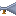
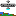

Starting as a New Player
This topic describes what to do when you start the game as a new player.
Home World
Your new player character spawns in a city on your home world, usually in the town square of the capital city of your empire. Your DNA is determined by the sentient race of your homeworld.
Targoss
Targoss approaches and begins to speak.
Targoss is a non-player character of your race. Targoss teaches you the basics of moving around and interacting with the game environment. Targoss is love. Targoss is life.
Command a Spacecraft
Assume command of a spacecraft. Start by locating a spacecraft that is waiting for a captain and crew. Spacecraft are manufactured at the capital city of most empires. Other cities may also manufacture spacecraft. Spacecraft are manufactured on the ground and in orbit. Go to the spaceport to find a new spacecraft that has been manufactured on the ground. New spacecraft spawn on a paved slab next to a spacecraft factory when they are manufactured on the ground. Top-down view (Backspace) may help find the spaceport. If no spacecraft is found on the ground, look for one in orbit. New spacecraft spawn near a space station when they are manufactured in orbit. Go to a space station to find a new spacecraft that has been manufactured in orbit.
Once you are aboard a new spacecraft, read How to Command Spacecraft.
Here are some suggestions for things to do with your new spacecraft and crew.
- Transport Passengers. There is no cost to board passengers and you make money when they debark somewhere besides where they boarded. The most money is made when passengers debark in a different solar system from where they boarded.
- Trade Cargo. Trading cargo has some risk as prices vary according to supply and demand. The officer in command spends money from the ship's fund to buy cargo and then tries to sell that cargo for a profit somewhere else.
- Explore the Galaxy. Your empire may reward exploration. Open the Governance (F12) window and select the Rewards tab to see what rewards your emperor has set for exploration activities. Note that rewards accumulate as a personal debt to your character. You must go to a bank of your empire to collect the rewards you have earned.
- Colonize Worlds. Your empire may permit and even reward colonization of new worlds. Colonization requires you to build a city. Open the Governance (F12) window and select the Policy tab to see whether your empire allows players to build cities. Explore the harsh inferno and frigid worlds for rare materials.
- Military Conquest. Your empire may have enemies that need to be crushed. Open the Governance (F12) window and select the Policy tab to view the political stance of your empire toward other known empires. Use troops and spacecraft to destroy enemy units and conquer enemy cities.
- Command a Fleet. As a result of colonization, or other activities, you may become the administrator of a sector of space. Every habitable world in your sector can produce an officer that is in your chain of command, if it has an airport terminal and a spacecraft factory. Place each officer in command of a ship and crew. Use them for military conquest or set up trade missions to transport passengers, trade cargo, and patrol the space in your domain.
- Adventure. Use the Comm (F3) window to check for jobs available. Some jobs are only available to spacecraft captains. Note: Story lines for adventure are not yet complete, except Targoss' simple start-up tutorial. This notice will be removed when more adventures become available.
Boarding a Space Station

To get aboard a space station, hail it on the comm. Open the Comm (F3) window and select the Hail channel. If necessary, open a new Hail channel using the list of standard channels. Press the Hail button to broadcast a hail message.
Each station in range will answer by opening a new channel on your comm that is the name of the station. Select a station's channel and request a beam-up. The station will initiate a transporter beam if it is equipped with a transporter room and it is orbiting the planet you are on.
If a station has no transporter room, locate a vehicle that can take you there. At the spaceport there may be a space fighter or space rocket that has spawned on a paved slab next to an aircraft factory. Use one of these vehicles to fly to a space station.

Space stations orbit a planet at its equator. Fly around the planet near the equator to find a space station. A navigation beacon on the station helps you find it.

Space stations maintain stocks of useful equipment, such as environment suits. Once aboard the space station, go to a cargo hold or living quarters. Use the Cargo (F5) window to transfer an environment suit and helmet into your inventory. Use the Personal Equipment (F4) window to wear the environment suit and helmet; drag the items to the appropriate spots to wear them. Right-click on the helmet to open and close the visor.
Hitch Hiking
An alternative to commanding a spacecraft is to join the crew of a spacecraft. This can also be helpful when there are no spacecraft available in your home solar system.
Request a berth aboard a spacecraft. Open the Comm (F3) window and select the Hail channel. If necessary, open a new Hail channel using the list of standard channels. Adjust the range to Galaxy range. Press the Request Berth button to broadcast a message.
Berth requests may be transmitted on any comm channel. The Hail channel is used in this example to contact everyone. It would also be appropriate to use the Friend or Empire channels, or any other channel on which someone is listening.
An officer of a spacecraft may Accept your berth request.
After your berth request is accepted, initiate a spawn recall.s You will respawn in your berth aboard the newly assigned ship.
Next (How To Buy and Sell Cargo) ->